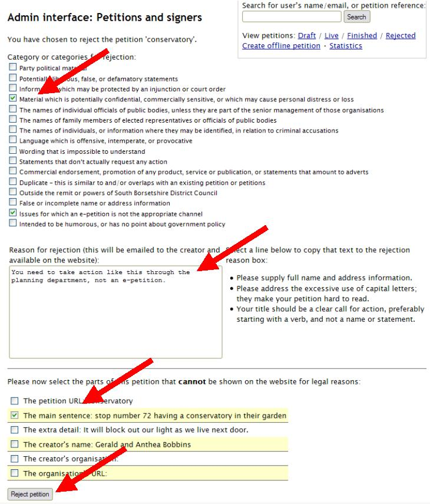

To reject a petition for the second time
If you wish to reject a resubmitted petition because it is still inappropriate, the rejection process is the same as for the first rejection.
Click the ‘Reject’ button on the admin interface page for that petition (or the ‘Reject’ button under ‘Actions’ on the list of Draft petitions).
Fill out the three stages to the rejection process: the category/ies for rejection, the reason/s for rejection, and hide any inappropriate parts of the petition. Finally, click the ‘Reject petition’ button:
This will send the petition creator an email automatically, letting them know that the petition has been rejected again, and giving them the categories and reasons you have just specified.
The petition can now be found under the ‘Rejected’ petitions in the admin interface, and will immediately be displayed on the public website under rejected petitions, along with the category/ies and reason/s for rejection, and minus any hidden information.
Once a petition has been rejected twice the creator cannot revise and resubmit it (although they can start a brand new petition with the same information if they wish).